Vous avez toujours rêvé de créer une map pour Dawn of War 2 ? Vous êtes fan du premier opus mais vous ne savez pas comment faire avec le créateur de map du second ? Ce tuto est pour vous ! Nous allons partir de zéro, même les plus sous-doués de l'informatique pourront y arriver ! Il suffit d'apprendre pas à pas et d'avoir un peu d'inspiration !
Exemle de maps:
Port des Griffes de Bronze par Iguane à la menthe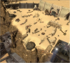Port des Griffes de Bronze par Iguane à la menthe
D'abord, qu'est-ce que le mapping (aussi appelé level design par les pros) ?
Je vais pas m'embêter :p
Citation : Wikipédia: level desin (mapping)
Le level design est le processus dans la création de jeu vidéo qui s'occupe de la réalisation des niveaux (ou cartes) de jeu (level ou map en anglais). C'est une phase importante qui a son influence sur le gameplay final du jeu. Plutôt que de concevoir des règles comme le Game designer, le level designer conçoit les environnements et décors qui peuplent le jeu, essayant de tirer un tout plausible, cohérent et varié.
La map sera donc la carte de jeu que vous créerez de toute pièce.
Dans ce tuto, et plus généralement dans tout ceux consacrés au sujet, on appellera le dossier <root> celui qui contient le jeu (Le plus souvent ce sera "C:\Program Files\Steam\Steamapps\Common\Dawn of War 2").
Si vous avez installé Steam (la plateforme de jeu dont vous avez du vous créer un compte pour ceux qui auraient oublié...) autre part, le dossier <root> est alors : "<dossier ou vous avez installé steam>\Steamapps\Common\Dawn of War 2" Vous pouvez regarder, c'est un joli bazar à l'intérieur...
Vous remarquerez qu'il y a une petite icône "WorldBuilder.exe" tout en bas... N'essayer pas de démarrer, ça plantera...
Adapter le fichier dev_pipeline.ini a votre langue de jeu
Ouhlalala le titre vous fait peur ? :lol:
Ce n'est pas compliqué : Déja, une question se pose : Jouez vous avec le jeu en Anglais ? Si oui, vous pouvez sauter cette étape. Sinon, vous devrez effectuer certaines modifications. Ouvrez le fichier "dev_pipline.ini" qui se situe dans le dossier <root> avec un éditeur de texte tel que bloc-note (notepad en Anglais) sous Windows.
Vous devez changer la 5ème et 11ème ligne comme ceci :
Locale = French et ucspath = GameAssets\Locale\French
En changeant les lignes, vous demandez au WB de charger les fichiers Français (Vous pouvez même les charger en d'autres langue si vous jouer en Allemand par exemple il faudra mettre German à la place de English).
Comme le jeu est mis à jour de temps en temps, les fichiers sont remplacés donc il se peut que vous ayez à recommencer cette manip. Certains problèmes peuvent aussi apparaître selon les versions du jeu.
Sur la version actuelle de Dawn of War 2 original et Chaos Rising (version 2.6), il n'y a aucun problème. Par contre, pour Retribution (3.12), il y en a un très gros. Si vous tournez sous une version de Windows 64 bits, vous aurez probablement un crash du WB à la création ou à l'ouverture d'une map. Ce que le WB de Retribution n'apprécie pas, c'est les caractères un peu spéciaux dans le chemin <root>; ainsi, la parenthèse dans "Program Files(x86)" peut provoquer un crash. De là, deux solutions: soit vous copiez-coller tout le dossier du jeu hors du "Program Files(x86)", ou vous réinstallez steam sous "C:\Steam" par exemple. C'est très contraignant, mais il n'y a pas le choix tant que le bug n'est pas résolu.
Voilà ! Vous êtes prêts pour créer votre première map ! Passons maintenant au mapping pur et dur !
L'avantage du WB, c'est que l'interface est relativement simpliste et intuitive : Il y a globalement 4 zones :
La sélection de mode d'édition
Les filtres de visualisation
La zone relative au mode d'édition
La zone de visualisation (la map est visualisée immédiatement telle que vous la verrez dans le jeu...)
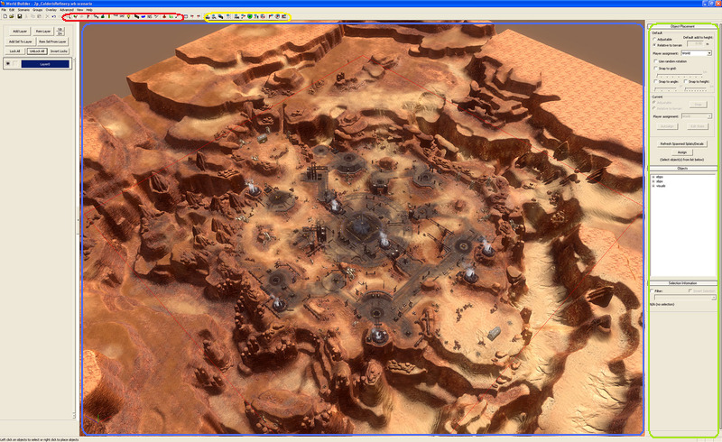
Il y a plusieurs modes d'éditions, avec les raccourcis suivants :
- F1:
mode de sélection. Il permet de sélectionner des objets pour voir certaines informations (personnellement je ne l'utilise que très rarement car le mode object possède les mêmes fonctionnalités). C'est le mode sélectionné par défaut à l'ouverture de votre map.
- F2:
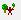
mode "Object". LE mode le plus utilisé. C'est simple : il permet de poser des objets sur votre map tels que des ponts, des barricades, des bâtiments et autres plantes extraterrestres...
- F3:
inusité (en fait on n'a pas encore découvert comment l'utiliser).
- F4:
Markers : utile pour faire des script. On l'abordera vers la fin du tuto car c'est plus compliqué.
-
Camera Mesh Editor : assez peu utilisé, on passera dessus très vite.
- F5:
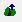
"Heightmap editor" : permet de modifier le relief de votre map pour créer des valons, des collines, des fosses...
- F6:
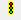
"Impass editor" : Permet de rendre inaccessible certaines zones de votre map (comme les fosses par exemple) et de gérer les problèmes de pathfinding.
- F7:
TILE (Texture Tile Painting Editor) : permet d'appliquer des textures a votre map, la "colorer".
- F8:
"Splat placement" : fonctionne comme le mode "object" mais contient des cratères, mares de sang, cadavres...
-
"Lighting mode" : utile pour faire des effets de lumière ou éclairer certains coins sombres de la map.
- F9:
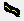
"Spline placement" : permet de placer des alignements d'objets, on l'étudiera dans la deuxième partie du tuto.
- F10:
"Water placement" : permet de créer des flaques et lacs.
- F11:
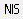
"NIS" : création de vidéos d'intro (on ne sait pas encore le faire marcher).
- F12:
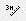
"Ruler Mode" : permet de mesurer des distances sur la map.
Cela peut paraitre un peu compliqué au début je vous l'accorde (j'ai été dans votre cas au début... :lol: ) mais vous allez voir que l'on se sert quasiment tout le temps des mêmes modes...
Pour créer une nouvelle map, allez dans File > New.
Choisissez la taille de votre map ("Terrain Size") puis la taille de la zone jouable ("Playable Arena").
Quelle est la différence entre les deux ?
Playable Arena est la zone jouable, les unités ne pourront pas aller au-delà de ces limites. Terrain size est la taille totale de votre map.
Mais alors à quoi ça sert finalement ?
Cela évite que votre map se finisse "dans le vide", par exemple comme cela :
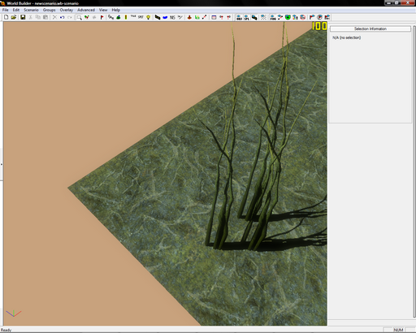
Mais faire plutôt en sorte que l'on ne voie pas le vide :
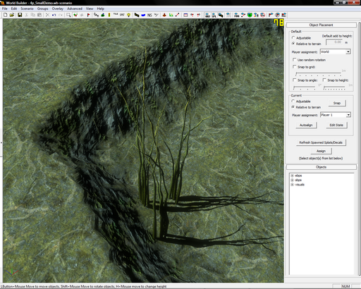
J'ai pris l'habitude de créer une "terrain size" plus grande que la "Playable Arena" pour éviter ce problème, et je vous conseille fortement de faire de même.
Une "Playable Arena" de map fait :
1vs1 normalement 128x128
2vs2 normalement 256x256
3vs3 normalement 512x512
Vous n'êtes absolument pas obligés de tenir compte de ces informations, mais c'est pour donner approximativement la taille pour que ça reste équilibré...
Je vous conseille pour commencer de faire une map de test 1vs1 288x288 avec une "Playable Arena" de 256x256.
Je ne détaillerais pas maintenant l'utilité de la ligne "ModName" mais on verra ca plus tard.
Avant tout, il est temps de donner un nom à la map. Allez dans "Scenario > Scenario Properties".
Mettez le nom que vous voulez dans "map name". C'est celui qui s'affichera quand vous serez dans le jeu. Vous pouvez mettre une brève description (elle ne sera pas visible dans le jeu).
Je pense que vous pouvez maintenant enregistrer votre map... Si vous voulez que ce soit une map de type "Libre d'accès" ("Free For All" en anglais), faites "File > Save as". Enregistrez votre map dans le dossier "<root>/Assets/Maps/freeforall" (il se peut que vous soyez obligés de créer ce dossier). Si vous voulez que ce soit une map jouable en "annihilation" et "points de victoire" alors enregistrez-la dans "<root>/Assets/Maps/PVP".
Donnez le nom de votre map au fichier, c'est plus facile pour s'y retrouver quand on a 10 projets de maps en cours... ;)
Il faut enregistrer la map assez souvent, car le WB à une fâcheuse tendance à crasher au moment le plus critique.
Vous noterez que la map s'enregistre dans un fichier "nom_de_votre_map.wb-scenario", mais si vous regardez dans ce dossier par la suite, il existe 5 autres fichiers essentiels au fonctionnement de la map (il ne faut donc pas les supprimer...) : Un fichier ".info", un ".layers", un autre ".scenariomarker", un ".xml" et un "_ID.scar".
Voilà ! Votre map est créée !!! Nous pouvons maintenant commencer à poser les premiers objets essentiels à toute map !
Le mode "object" est le mode le plus utilisé du WB : il permet de poser, déplacer, faire tourner les objets... sans lui, votre map n'est même pas jouable. Nous allons donc apprendre à l'utiliser et quels sont les objets essentiels à toute map.
Nous allons commencer par nous mettre en mode "object". Pour cela tapez F2 ou cliquez sur le 11ème bouton en partant de la gauche. Ne vous étonnez pas si cela prend quelques secondes c'est normal... :-°
Vous verrez que dans la fenêtre relative au mode, vous verrez en bas à droite un petit cadre blanc avec "ebps", "sbps" et "visual". C'est les dossiers qui contiennent tout les éléments du jeu. Oui oui vraiment tous... même ceux inusités que vous ne verrez jamais en jeu... ;) Nous n'allons pas nous préoccuper de "sbps" et "visual" : on verra ça plus tard... Le dossiers le plus important : "ebps". Double-cliquez dessus, vous verrez normalement trois sous dossiers apparaître, "campaign", "pvp" et "world_objects". Le plus important est "world_objects". Les autres contiennent des éléments relatifs a la campagne (on y trouve des balises de téléportation, bâtiments stratégiques...) ou au mode multijoueur. Pour placer un objet, cliquez sur lui dans l'arborescence et faites un clic gauche dans la zone de visualisation, l'objet apparaitra.
Pour le déplacer, maintenez le bouton gauche de la souris enfoncé. Pour le faire tourner sur lui même, maintenez "shift" (majuscule) enfoncé et déplacez votre souris. Pour en modifier la hauteur, maintenez "h" enfoncé de la même façon.
Pour séléctionner plusieurs objets, maintenez "shift" et cliquez sur les objets voulus. Il y a aussi un "raccourci" utile : maintenez C quand un ou plusieurs objets sont sélectionnés, puis déplacez la souris et... un beau copier/coller ! :waw:
Les commandes de la caméra sont quasiment les mêmes que celles du jeu : touches fléchées pour se déplacer, Alt + Clic gauche enfoncé pour faire tourner la caméra, la molette pour zoomer...
Le plus important de tout : mettre un objet pour que le jeu sache ou placer les bases des joueurs.
Allez dans "world objects > gameplay" puis sélectionnez "starting_position_pvp_menu". Placez l'objet là ou vous voulez que le joueur 1 aie sa base...
Mais il apparait une maison grise toute moche ! C'est normal ?
Oui c'est normal c'est juste que la maison toute moche sera remplacée par la base de la race choisie par le joueur 1... D'ailleurs il faudrait penser a faire en sorte que ce soit lui qui la contrôle... Vous voyez "player assignment" lorsque vous sélectionnez la base ? (HQ) Il est par défaut "world". Changez-le avec le menu déroulant en "player 1". Faites de même avec la base de l'autre joueur et mettez "player 2".
Par défaut, si vous mettez :
- 2 bases, ce sera une map 1vs1
- 4 bases, ce sera une map 2vs2 avec :
Équipe 1 :
Player 1
Player 2
Équipe 2 :
Player 3
Player 4
- 6 bases, ce sera une map 3vs3 avec : Équipe 1 :
Player 1
Player 2
Player 3
Équipe 2 :
Player 4
Player 5
Player 6
En FFA, c'est automatiquement du chacun pour soi, et pour le FFA par équipe: Équipe 1 :
Player 1
Player 2
Équipe 2 :
Player 3
Player 4
Équipe 3 :
Player 5
Player 6
Pourquoi ne pas rajouter 2 tourelles pour défendre chaque base ? Toujours dans "gameplay", sélectionnez "turret_position" puis placez 2 tourelles à chaque base. Attribuez-les à leur joueur respectifs...
Tout les objets autres que les bases et les tourelles doivent rester "world" sinon vos gars se mettront a tirer sur tout ce qui n'est pas "world" :-° . Placez aussi des points de réquisition : "strategic_point_requisiton_pvp" et des points d'énergie : "strategic_point_pvp". Vous pouvez aussi placer des points de victoires : "victory_point_pvp".
Pour tester une map en cour de formation, faites "File > Save and Bake", puis lancez le jeu en mode "développeur".
Pour cela, dans steam (la plateforme de téléchargement de jeu dont vous devriez posséder un compte car le jeu ne fonctionne pas sans steam...), cliquez sur "Mes jeux", faites un clic droit sur "Warhammer 40.000 Dawn of War 2" puis "Propriétés". Dans l'onglet "Général", faites "Définir les options de lancement", tapez "-dev" puis faites ok. Lorsque le jeu se lancera, votre map apparaitra dans la liste et vous pourrez jouer dessus...
Voilà ! Votre map est jouable même si elle n'est pas encore très jolie... Nous allons corriger ça ! :pirate:
Nous allons ici découvrir les principales options du mode "object", et ce à quoi il faut faire attention, puis nous verrons un autre type d'objets : les splats.
Je vais vous renseigner sur l'arborescence des objets :
Dans "ebps" : "campaign" renferme les bâtiments de la campagne, "playable" étant les races jouables (donc space marines) et "npc" les "no playable campaign", soit les races non-jouables, c'est à dire toutes les autres. ;) "pvp" renferme les bâtiments du mode multijoueur, classés selon les races. Généralement, ces éléments sont plus intéressants quand il sont attribués à un joueur (comme la base ou les générateurs). "world_objects" renferme tout les objets de décors, il vaut mieux les laisser en "world", sinon vos unités se mettront à tirer dessus dès la première occasion. Après, le reste est relativement compréhensible avec un minimum d'Anglais.
Dans "sbps" : Ce répertoire n'est utile que pour le NIS et le modding, donc n'y touchez pas.
Dans "visuals" : je vous autorise à regarder dedans, ce sont en fait d'autres objets, mais faites attention: ils sont traversables. Ne le postez donc qu'en des endroits inaccessibles par les joueurs.
Vous avez de la chance, l'unité de mesure du WB n'est ni le nanomètre, ni le miles, ni une unité de mesure farfelue genre le dawnofwardeusien, mais bien le mètre ! Ceci nous facilitera grandement la tache... La carte du jeu est en fait divisé en cubes de 1m de coté, donc au sol des carrés de 1m de coté (que vous pouvez voir en activant un filtre, "overlay", 9ème bouton en partant de la droite
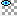
).
Quand vous placez des objets, vous pouvez donner certaines caractéristiques qui seront attribués dès que vous placerez un objet. Dans l'onglet "Object placement" sur la gauche, il y a plusieurs outils :
La hauteur de l'objet : vous pouvez choisir par défaut si l'objet sera collé au terrain ("relative to terrain") ou alors si il aura une certaine hauteur par rapport au terrain ("adjustable", "default add to height", choisissez une hauteur en mètres).
Le joueur qui possède l'objet : vous pouvez choisir quel joueur possède l'objet lorsqu'il est placé.
La "random rotation" : place l'objet dans une direction aléatoire, très utile pour réaliser une forêt ou les arbres ne sont pas alignés...
Le "snap to" :OUTIL TRÈS IMPORTANT ! Il permet de vous faciliter la vie... Le principe : le WB va déplacer l'objet pour le mettre aligné avec un des axes de la carte.
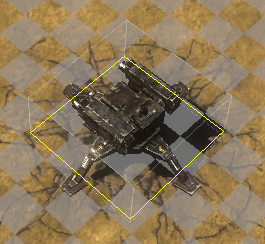
"Snap to grid" : l'objet va être collé à la grille... comme ici :
Si vous changez la valeur en mètres, l'objet va être placé aléatoirement dans un rayon de ? mètres.
"Snap to angle" : les objets vont automatiquement prendre une direction que l'on peut faire varier (en degrés).
"Snap to height" : l'objet va être placé à une altitude en mètres exacte (et pas avec 50 chiffres après la virgule...).
Vous pouvez modifier les propriétés de l'objet courant dans "current".
Les ponts et escaliers sont une classe particulière d'objets : en effet, ils ont posés pas mal de problèmes aux concepteurs...
Problème : les unités doivent changer d'altitude au fur et à mesure que l'escalier monte. Deuxième problème : vous demandez à une escouade d'aller à un tel point de la map. Oui mais ou aller ? Sous ou sur le pont ?
Les développeurs ont fait le choix que ce serait toujours sur le pont. ON NE PEUT DONC PAS PASSER SOUS LES PONTS !!!
Et comme disait un développeur :
Citation : Un développeur
"In the dark future of the 41st millenium, stairs are bridges"
(dans le sombre futur du 41ème millénaire, les escaliers sont des ponts).
Ainsi, les escaliers ont les mêmes propriétés que les pont. ON NE PEUT DONC PAS NON PLUS PASSER SOUS LES ESCALIERS ! De plus, lorsque vous connectez un pont à un escalier, les deux objets doivent avoir exactement la même hauteur (d'ou le "snap to height") ! Faites donc attention !
Les "blockers" sont utiles si vous voulez interdire un accès à une zone. Ils se trouvent dans "World_objects > Gameplay". Les plus intersessant sont "move_blockers" et "move_shot_blockers". Le premier interdit le mouvement, et le deuxième interdit le mouvement et arrête les tirs... Ce qui peut être utile dans certaines situations bien précises (nous en rencontreront par la suite).
Pour entrer dans ce mode appuyez sur F8 (le 18ème bouton en partant de la gauche
)
Les splats sont des objets un peu spéciaux : ils n'ont pas de points de vie, il ne peuvent donc pas être détruits, juste recouverts par des effet spéciaux.
C'est simple, dans cette catégorie rentre les cratères qui servent de couvert ("CRATER"), les mares de sang ("NM_STAINS"), des marquages de routes ("URBAN MARKINGS"), ou encore des tâches, etc...
Les propriétés sont comme dans le mode "object" : Rand Placement, Snap to. "Scale" est la taille du splat, et l'on peut changer sa couleur dominante ("colour").
Exemples de splats avec des différentes "scale" et couleurs :
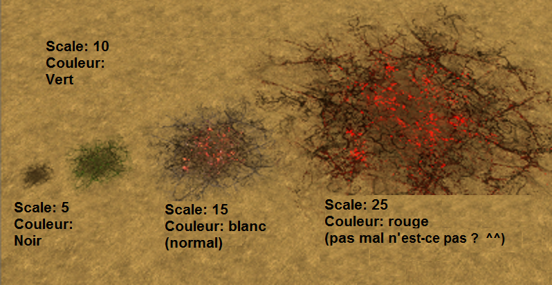
Très bien, très bien... maintenant passons aux reliefs ! :pirate:
Les reliefs sont une phase très importante du mapping, tellement importante que... il vaut mieux commencer sa map par ça !
Quoi ? Tu nous a fait poser des objets pour rien ?
C'était essentiel pour votre compréhension de commencer par le mode "object"...
Si c'est l'une des premières choses qu'il faut faire sur une map, c'est parce que pas mal de trucs bougent en fonction de la hauteur, donc si vous mettez du relief sur une map quasiment terminée, elle sera défigurée... Pour les reliefs, je dirais qu'il existe deux méthodes, l'une aussi valable que l'autre, utiles que dans certains cas.
Pour rentrer dans ce mode, appuyez sur F5 ou cliquez sur
La 1ère méthode est plus intuitive : En effet elle se fait "au jugé" : vous voyez les lignes LMB/RMB mode avec le menu déroulant ? C'est la façon dont on modifie le terrain. Le LMB mode est pour le clic gauche (Left Mouse Button), le RMB pour le clic droit (Right Mouse Button). Ainsi, vous pourrez effectuer deux actions différentes avec les boutons de votre souris.
Additive : Pour créer des collines. Maintenez un clic gauche dans la zone de visualisation et le relief s'élèvera à l'emplacement du rond blanc, jusqu'à ce que vous relâchiez le bouton. Essayez pour voir !
Substractive : même chose que additive, mais à l'envers, pour créer des vallons.
Smoothing : égalise le terrain, pour que la montée ne soit pas trop abrupte.
Pour résumer, un screenshoot vaut mieux qu'un long discours :
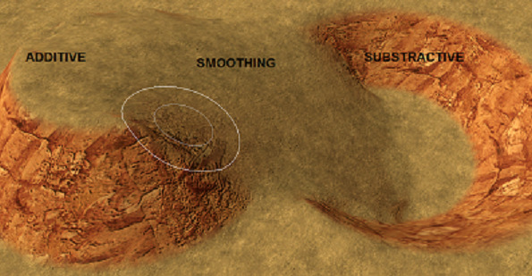
Je vous conseille de prendre "Additive" en LMB et "Smoothing" en RMB.
La deuxième méthode est "set value", soit le dernier mode de "LMB mode". L'inconvénient de la première, c'est que ce n'est pas très précis. Le mode "set value" va augmenter ou diminuer le relief jusqu'à une certaine altitude que l'on donnera, au moyen de la ligne "height" (hauteur en anglais).
Vous avez le choix : soit vous faites glisser la barre de "height" pour avoir différentes hauteurs, soit vous sélectionnez des hauteurs préétablies (presets), soit vous entrez vous-même la hauteur voulue dans la case blanche, et appuyez sur la touche "entrée" (cette façon de faire est la plus conseillé). Il est plus simple de prendre pour hauteur des multiples de cinq, car tous les objets, comme les escaliers et les bâtiments, sont basés sur cette mesure.
Vous pouvez modifier certaines choses très pratiques :
Brush size : la taille du pinceau (donc du rond blanc).
Feather : plus le feather est élevé, moins la pente est abrupte. En fait, si vous regardez, il y a deux ronds blancs : l'extérieur est celui qui sera au niveau zéro, l'intérieur au niveau maximum. En modifiant feather, vous variez la distance entre les deux cercles.
Strengh : ("force" en anglais) : modifie la vitesse à laquelle l'altitude augmente.
Et les boutons en-dessous :
Sample : en maintenant Ctrl et en cliquant n'importe où sur la map, le terrain sera aplani à l'altitude où vous aurez cliqué.
Smooth terrain : fait un "smoothing" général sur tout le terrain. Rentrez d'abord la force du smooth, entre 1 et 100, puis le diamètre du rond blanc entre 3 et 31, le WB fera le reste. (en gros pour une très bonne égalisation il faut mettre 100 puis 31).
Optimize terrain : modifie aléatoirement les reliefs, plus la valeur est élevée, plus les reliefs sont modifiés.
Toogle Wireframe : Inutile...
Hop ! Vous venez un des éléments essentiels dans l'élaboration d'une map ! Mais bon, ne nous arrêtons pas sur une si bonne lancée...
Dans la zone relative au mode d'édition, il y a deux onglets importants :
"Layers" : les emplacements de texture (cases de la palette de peinture), ils sont 8 en tout.
"Existing Layers" : les textures (les couleurs).
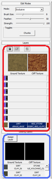
Au départ il y a un emplacement de pris pour la texture de base quand on crée la map, puis sept emplacements vides rose-mauve-noir tout moche. Pour mettre ou changer de texture dans un emplacement (en gros mettre ou changer de couleur sur la palette) : cliquez sur l'emplacement voulu dans "layers", puis sur la texture voulue dans "existing layers", puis sur "assign layer". Vous avez mis une couleur sur la palette !
Pour peindre, il faut choisir l'emplacement avec la texture voulue, choisir la taille et la force du pinceau dans l'onglet "edit modes" (comme dans le mode relief, avec "brush size" et "strenght" ainsi que "feather"), puis peindre en maintenant le bouton gauche de la souris enfoncé.
Pour effacer toute une zone, cliquez sur la gomme dans "layers" et cliquez sur un carré, ça effacera tout le carré !
Exemple :
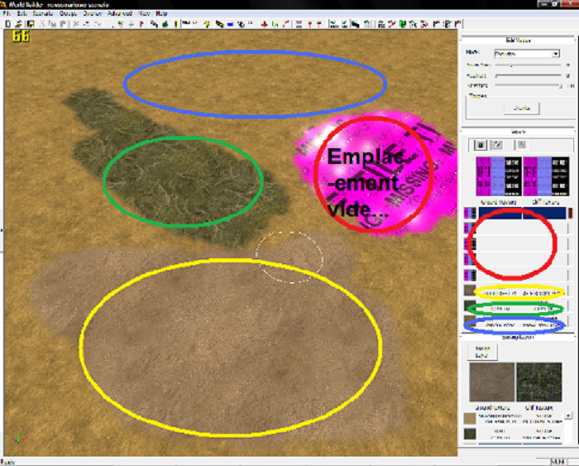
Notez que vous pouvez supperposer plusieurs textures en faisant varier "strenght", valeur qui va de 14% (minimum) à 100% (terrain unitexturé). Vous pouvez ainsi faire par exemple un mélange de trois textures: 20/30/50. Pour avoir un bon rendu esthétique, il est conseillé de mélanger des textures assez proches et de les peindre assez aléatoirement pour avoir un rendu naturel. Exemple avec à coté les textures utilisées:
Les lumières sont très utiles pour faire des effets de... lumière... :magicien:
Exemple :
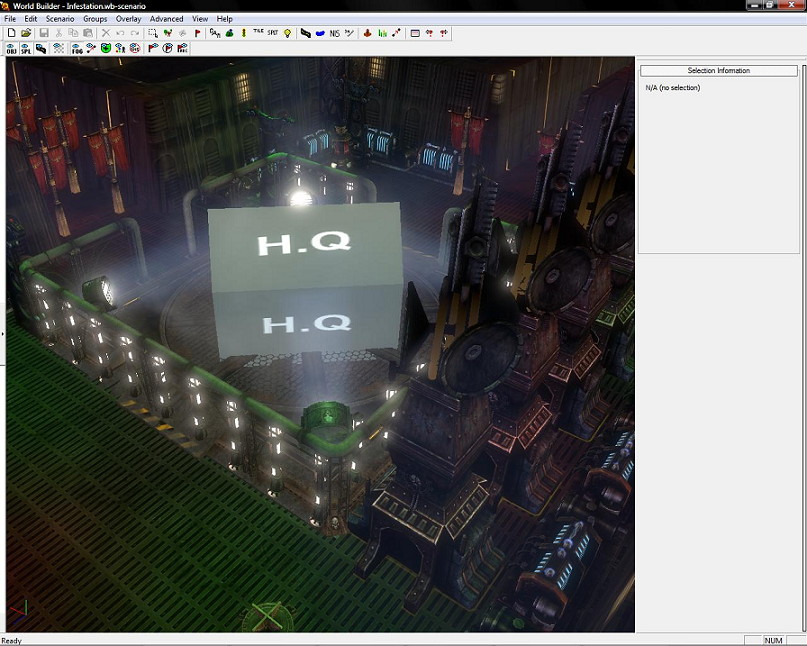
Map infestation par moi...
Pour faire des effets de lumière, démarrez le lighting mode
. Normalement des tas de petites boules devraient apparaître... c'est normal... Vous voyez a droite deux onglets "lighting" et "light object" ? Ouvrez-les en cliquant dessus.
Vous pouvez maintenant placer une lumière et la déplacer comme n'importe quel objet... Dans "light object", vous pouvez choisir la couleur (light colour) de la lumière son intensité (light brightness), et sa taille avec scale. (modifiez les chiffres vous verrez la forme de la lumière varier : X -> Largeur, Z -> Longueur, Y -> Hauteur).
Quand vous voulez voir ce que ça donne, cliquez sur "quick bake lighting" et après un petit temps d'attente les lumières influeront sur le reflet ou la couleur des objets alentours (attention ceci n'est visible que dans le mode "lighting").
Lorsque vous êtes sûr d'avoir terminé cliquez sur "bake lighting". Je dit de le faire que quand vous êtes sûr car le bake lighting prend environ 5-10 minutes... après cela les effets de lumières seront visible dans tout les modes et quand vous jouerez.
Les "stamps" sont des effets animés tels que des flammes ou de la fumée...
Téléchargez tout d'abord le dossier ci-dessous qui contient 22 effets. Effets Extrayez le fichier zip puis placez le dossier effect dans : "<root>\Dawn of War 2\Tools\ToolsData\WorldBuilderData\stamps" (Si le dossier stamps n'existe pas, il faut le créer)
Le WB possède maintenant une liste d'effets en mémoire (vous devez le redémarrer pour que les changements soient acceptés)...
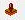
Sélectionnez "Stamp Placement" à la barre d'outils. Sélectionnez l'effet désiré dans la liste (dans le dossier effects), placez-le sur la carte (il peut être déplacé après). Soit appuyez sur "entrer" ou cliquez sur le bouton "Create Stamp" immédiatement après.
Au secours le truc a disparu !
C'est normal... Ces effets ne seront pas encore visible (mais on va les faire démarrer).
Sélectionnez "Render Marker Prox" (F4)
Assurez-vous que "Action Markers" soit sélectionné dans la zone relative au mode d'édition. Il apparaitra alors un petit point rouge la ou vous aurez posé le stamp. C'est lui ! Pour démarrer les effets, soit sélectionnez chaque Stamp et appuyez sur "Restart" ou cliquez sur le bouton "Restart all".
Pour déplacer un effet : sélectionnez un axe, ou un carré de couleur, et déplacez la souris. Vous ne pouvez pas utiliser la touche "H" pour soulever vous devez sélectionner l'axe vert... "C" peut être utilisé pour copier comme d'habitude.
Pour effectuer des changements voir la boîte de commande (dans la zone relative au mode d'édition). Échelle, direction, etc ... peuvent toutes être modifiées (exemple de l'échelle ci-dessous).
Pour modifier un effet, il faut tout d'abord sélectionner celui-ci. Cliquez sur le "+" de "fx_attach", on peut effectuer plusieurs changements (après avoir changé quelque chose, faites "Edit Action" ou appuyez sur la touche "Entrée" puis cliquez sur "Apply Changes" :
Delay : Retard en vigueur à compter à partir du démarrage de la map (en secondes)
FX : ne doit pas être changé
Position : on peut la changer directement dans l'écran de visualisation... ;)
Orientation : pour faire pivoter jusqu'à 360 °, mais ne change pas de direction
Length : Hauteur de l'effet en mètres
Scale : Directement la taille de l'effet (en gardant les proportions).
Ce mode permet de mesurer les distances (chose utile si on veut savoir si telle unité passera dans ce couloir par exemple...). Pour commencer,
démarrez le Ruler Mode.
Pour mesurer une distance, il faut donner deux informations :
Sélectionner le type de point de départ avec "start" (si c'est un objet, l'ordinateur prendra le point en son centre).
Sélectionner le type de point d'arrivée avec "end" (là encore, si c'est un objet, l'ordinateur prendra le point en son centre).
Faites un clic gauche sur le terrain ou l'objet, un deuxième clic gauche, et la distance s'affichera en bas à droite...
Vous pouvez même faire un truc spécial : si vous activez "Compute Pathfinding", le Ruler Mode calculera automatiquement le chemin que fera n'importe quel unité pour aller d'un point à un autre... Ce qui permet de prévoir les trajectoires et de vérifier que certains endroits de la map restent accessible... ou pas.
Le "Camera Mesh Editor" permet d'éditer les propriétés de la caméra en jeu...
Démarrez le Camera Mesh Editor (au cas ou vous auriez pas deviné ^^ ).
Vous verrez alors une grille rouge apparaître : elle représente la hauteur de la caméra à tout les points de la carte. Si vous voulez, c'est comme l'éditeur de reliefs, sauf que là, c'est l'altitude de la caméra que l'on change.
Vous pouvez cependant effectuer une chose très utile : le "Generate Default Camera Mesh". L'ordinateur va automatiquement faire varier la hauteur de la caméra en fonction du relief, et d'une façon lisse (pas de chute de 50m de la caméra). Cela ressemble beaucoup à "Smooth Terrain" pour le relief, mais ici on s'en sert pour égaliser les variations de hauteur de la caméra. "Camera Mesh Smooth Radius" permet de choisir la taille du smooth, comme pour les reliefs, et "Maximize Reduction Radius" détermine la variation de hauteur maximale entre deux points. Essayez un peu au pifomètre (tiens j'aime bien ce mot :) ) et vous arriverez surement à quelque chose de bien.
Les impasses sont très pratique, elles permettent de bloquer l'accès à certains endroit : des fosses, des zones entières...
Nous allons d'abord aborder une notion importante, le pathfinding.
Citation : Wikipédia: Pathfinding
La recherche de chemin, couramment appelée pathfinding, est un problème de l'intelligence artificielle qui se rattache plus généralement au domaine de la planification et de la recherche de solution. Il consiste à trouver comment se déplacer dans un environnement entre un point de départ et un point d'arrivée en prenant en compte différentes contraintes.
Nous allons donc poser des contraintes au pathfinding pour que nos joueurs ne puissent pas aller dans certains endroits. Aucune capacité spéciale ne peut être utilisée dans une zone impassable (même les bombardements orbitaux c'est pour dire... :D ). Pour commencer, démarrez le "Impass Map Editor"
(il y a des trucs qui changent pas :p ).
Vous verrez alors la grille de "Overlay" apparaître. Si vous avez choisi une "Playable Arena" plus petite que la taille totale de la map, les bords de celle-ci ne seront pas quadrillés. C'est simple : pour rendre un endroit impassable, maintenez un clic gauche de la souris comme pour les textures, et la zone deviendra orangée, elle sera impassable ! Pour rendre une zone accessible, même chose mais avec le bouton droit de la souris.
Vous pouvez faire "Overlay > Regenerate All Pathfinding", et alors tout les endroits inaccessibles seront indiqués :
En rouge : inaccessible à cause du relief ou d'un objet
En orange : inaccessible parce que vous l'avez décidé :lol:
En gris : accessible
Voilà ! On peut maintenant dire que vous avez vraiment les bases, et que ce chapitre vous a servi pour pleins de petits détails très utiles !
Vous savez maintenant créer et jouer une map qui ressemble à quelque chose...
Je vous conseille de souffler un peu et de vous exercer pour maîtriser les bases. Cela dit, même si vous ne les avez pas bien acquises, vous pouvez très bien continuer tout de suite ! ;)
Tout mappeur finit un jour par rencontrer un problème très ennuyeux à régler...
Qui n'a jamais rêvé de faire un mur lisse sans se prendre la tête ? Ou encore d'aligner correctement une route en un clic ? Certes le "snap to" est très utile, mais aligner des objets, c'est long, ennuyeux et ca n'a aucun intérêt.
Comme tout les développeurs, geeks et informaticiens sont des fainéants, ils ont inventé des raccourcis ! ;)
Vous avez sans doute remarqué que dans les splats, il y a des morceaux de route. Or ces morceaux, vous ne pouvez pas les courber pour faire des virages directement, vous êtes obligé de faire des routes droites.
Pour commencer, démarrez le mode d'édition des splines : F9 ou 20ème bouton en partant de la gauche
(dans la vie, certaines choses changent, d'autres non... Je diverge :D ).
Sur la droite, vous voyez un panneau composé de plusieurs onglets (je vous dicte la méthode à suivre) :
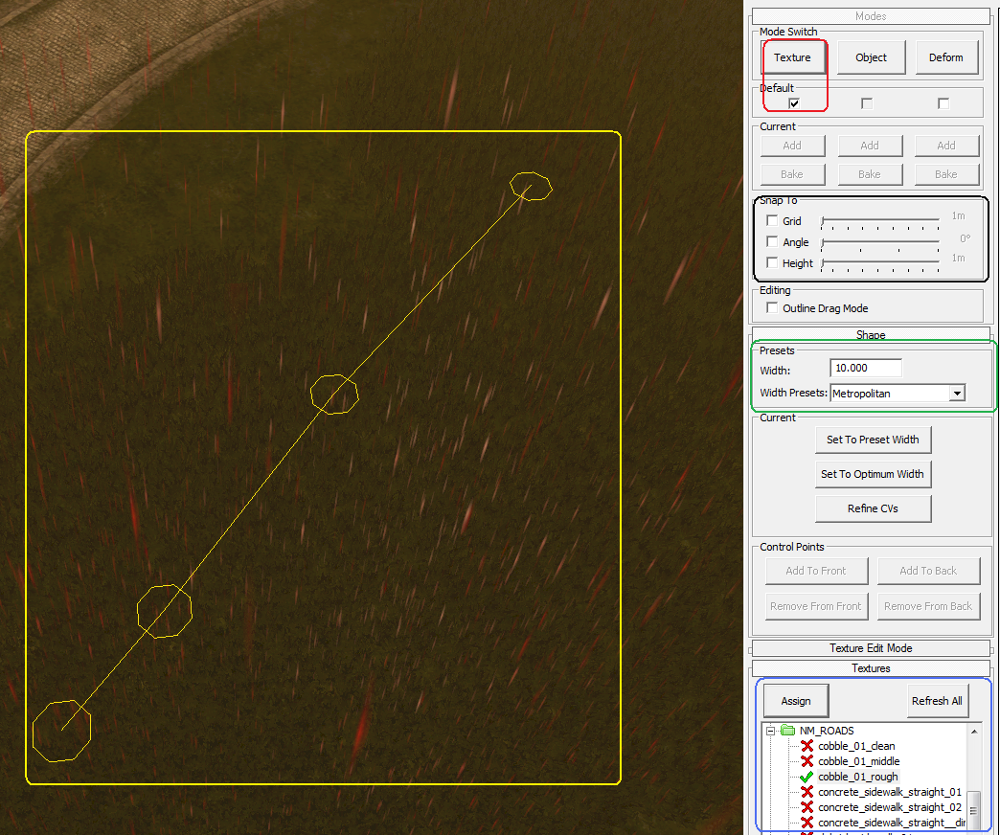
Cliquez sur "Texture" ;
Choisissez un splat dans la liste (regardez dans roads :-° ) ;
Choisissez la largeur de la route ;
Assurez-vous que le bouton en-dessous de "Textures" est bien coché ;
Placez au minimum quatre points sur la map avec un clic droit et tapez sur "entrée" ;
Vous pouvez utiliser le "snap to" habituel.
Une route doit apparaître comme ceci par exemple :
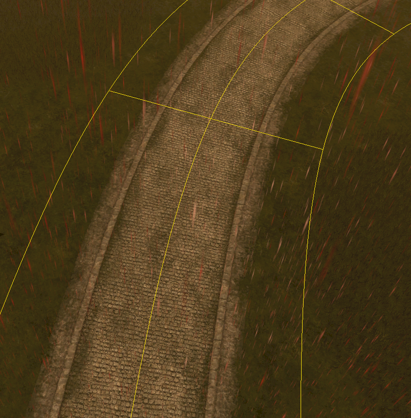
Et vous pouvez faire cela avec tout les splats !!! Les points sont reliés automatiquement par les splats... Pratique non ? ^^
Allez... on poursuit sur notre lancée. Maintenant, les splines "deform" : elles permettent de faire la même chose, mais avec le relief !
Cliquez sur "Deform" ;
Rentrez une hauteur (height) et une largeur (widht) ;
Vérifiez que la case en-dessous de "deform" est cochée ;
Placez la spline avec les quatre points minimum puis "Entrée" ;
Admirez le résultat !
Ceci est utile lorsque l'on veut combler du vide très rapidement.
Si vous voulez une spline bien alignée, je vous conseille d'activer le filtre "Overlay"
, qui permet de voir le quadrillage de la map. Vous pourrez alors placez les points jaunes sur une même ligne pour obtenir une spline parfaitement droite.
Nous arrivons enfin au plus intéressant, les alignements d'objets. Ou comment faire un mur de 500m en 30 secondes ! :p
Hop, on clique sur le bouton "object".
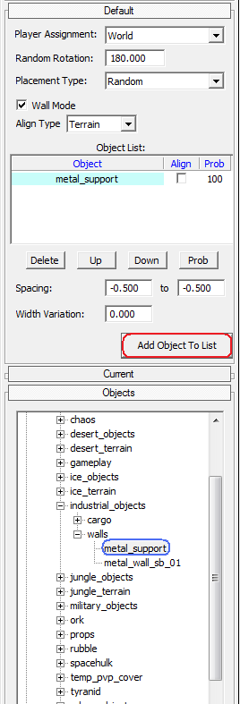
Sélectionnez un objet dans la liste (comme dans le mode "object") ;
Faites "Add object to list" (attention : celui de l'onglet "Default" et pas "Current") ;
Cochez la case en-dessous de "object" ;
Placez la spline !
Vous pouvez mettre autant d'objets que vous voulez dans la liste, pour varier le type d'objets alignés ! Après, il y a plusieurs petits trucs utiles :
Player Assignement : définit à qui appartiennent tous les objets de la spline ;
Random rotation : définit l'angle slon lequel les objets de la spline sont placés ;
Placement type : définit si les objets de la liste sont placés dans l'ordre ou aléatoirement ;
Wall mode : à laisser coché ;
Align type : comme pour le mode object, mais s'appliquant à tous les objets de la liste ;
Spacing : les objets sont espacés de la distance choisie (ou aléatoirement entre les deux chiffres) ;
Width Variation : les objets sont éloignes de X mètres les uns des autres.
Autre chose intéressante : vous pouvez cumuler les trois types de splines en même temps (qui veut faire une route surélevée avec un mur dessus ? :p ) !
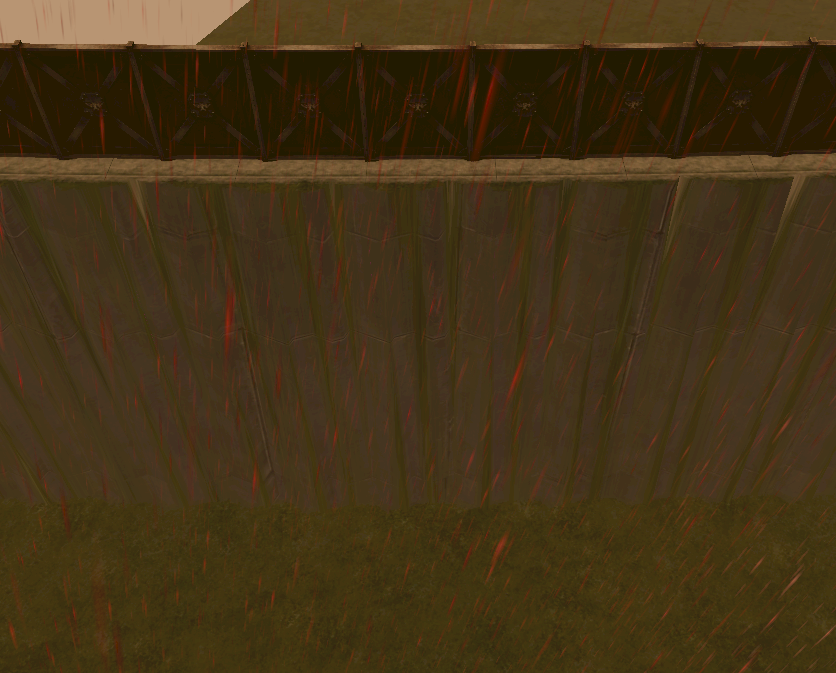
C'est simple : pour cela cochez les cases correspondantes en haut du panneau, et créez votre spline !
Vous rêviez de faire une cité impériale sans prise de tête ? C'est maintenant possible ! :p
Cette partie est terminée, elle achève ce tuto. J'espère vous avoir été utile ! Si vous ne l'avez pas déjà fait, je vous conseille d'aller jeter un œil dans l'annexe, pour apprendre comment compiler votre map. ;)
Vous voulez jouer avec des amis sur votre nouvelle map ou vous voulez la diffuser pour la communauté ? Il faut créer un fichier d'archive dans lequel seront placés tous les fichiers relatifs à votre map. Ce dossier est un fichier d'archive appelé SGA.
Assurez vous d'abord que votre map est TERMINEE, et que vous avez fait "Save and Bake". Par précaution, pour éviter un bug, videz votre dossier "<root>\GameAssets\Simulation\Maps" et "<root>\Assets\Maps\Pvp" des fichiers qui ne sont pas en rapport avec votre map (mettez-les dans un dossier provisoire sur le bureau). Il faut que <root> soit vide de fichiers de map à part ceux de la map que vous voulez compiler !
Une fois n'est pas coutume, on commence par une modification (à ne faire qu'une fois) : allez dans le dossier "<root>\Tools\Bin" et ouvrez le fichier "CreateArchive.bat" dans ce bon vieux Bloc-Note. Vous obtenez ceci :
@echo off
REM Usage:
REM CreateArchive.bat <module name>
REM
REM Example:
REM CreateArchive.bat 4p_WhySoMean
REM
REM The following pushd command sets the current directory to the folder that this batch file is located within
pushd "%~dp0
Archive.exe -c -r ..\..\GAMEASSETS\ -cf ..\..\Assets\ArchiveDesign\%1.sga_design -a C:\DOW2-WB\Root\GameAssets\Mods\%1.sga -log %1.log
Modifiez la dernière ligne pour obtenir ceci (remplacez ce qui est entre crochets et attention aux guillemets !) :
Archive.exe -c -r ..\..\GAMEASSETS\ -cf ..\..\Assets\ArchiveDesign\%1.sga_design -a "[<root>]\GameAssets\Mods\%1.sga" -log %1.log
Ensuite il faut dire au jeu ce qu'il faut compiler (à faire pour chaque nouvelle map à compiler) : allez dans "<root>\Assets\ArchiveDesign" et copiez-collez le fichier "4p_SmallDemo.sga_design".
Renommez-le en "Nomdevotremap.sga_design", puis ouvrez-le avec bloc-note et remplacez ce qui est entre crochets :
Et maintenant, il ne reste plus qu'à lancer la compilation ! Tapez cette commande dans exécuter (sous Windows XP : Démarrer > Exécuter ; sous Vista/Seven : Démarrer > Tout les programmes > accessoires > Exécuter) :
Attention aux guillemets et à l'espace entre le chemin et le nom de votre map. Voilà, la map est compilée et apparaît sous forme d'archive SGA dans "<root>\GameAssets\Mods" ! Ce fichier contient toutes les infos sur votre map !
Il ne reste plus qu'à dire au jeu qu'on a une nouvelle map ! Dans <root>, modifiez le fichier DOW2.module avec bloc-note comme ceci (dernier paragraphe) :
Vous pouvez ainsi rajouter autant de maps que vous voulez... C'est aussi ce fichier qu'il faut modifier quand vous téléchargez les maps des autres. Le plus important est de toujours faire augmenter le chiffre après "archive." (si cela n'est pas respecté, le jeu plantera).
Maintenant, lorsque vous lancerez le jeu, votre map sera ajoutée à la liste.
Maintenant il ne reste plus qu'à trouver un hébergeur pour stocker vos fichiers, il en existe des tas gratuits comme RapidShare, MediaFire ou encore MegaUpload. C'est simple, téléchargez votre fichier, il vous sera communiqué le lien de téléchargement, que vous pourrez donner à tous vos amis !
Voilà ! Votre map est maintenant jouable en ligne avec des amis ! Vous pouvez aller sur le site communautaire, toutes les maps des joueurs français sont ici... Vous pourrez la poster pour nous en faire profiter. ;)
Voilà, ce tuto est terminé, maintenant que nous avons fini vous savez créer une map esthétique, stratégique et unique... J'espère que ce tuto vous a bien aidé et à plus tard sur Dawn of War 2 !!!

{kind=link}
{kind=link}
{kind=link}